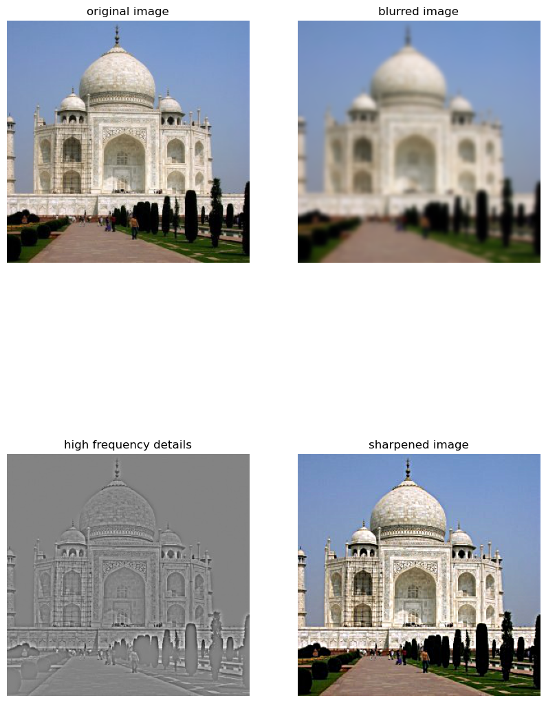

Part 1.1: Finite Difference Operator
To compute the gradient magnitude of an image, we first calculate the partial derivatives in both the horizontal and vertical directions using finite difference kernels. Specifically, we use a kernel like [1, -1] to find differences between adjacent pixels horizontally (dx), and a kernel like [[1], [-1]] for vertical differences (dy). By convolving these kernels with the image, we obtain the gradients along each axis. The gradient magnitude at each pixel is then computed by combining these partial derivatives using the Euclidean norm: sqrt(dx² + dy²). This results in a single image where the intensity of each pixel represents the strength of the gradient at that point, effectively highlighting edges and areas with significant intensity changes.

Part 1.2: Derivative of Gaussian (DoG) Filter
When computing the gradient magnitude on the blurred image (after applying a Gaussian filter), we observe that the resulting edges are smoother and less noisy compared to using the original image. The binarized edges become thicker and rounder, and fine details or small noise elements—such as the minor artifacts at the bottom of the image or intricate features within the camera—are significantly reduced or eliminated due to the smoothing effect of the Gaussian blur.
Furthermore, when using the derivative of Gaussian filters (by convolving the Gaussian kernel with the finite difference kernels to create dx_gaussian and dy_gaussian), and then convolving these with the original image, we obtain results that are essentially identical to the previous method of blurring the image first and then applying the finite difference kernels. This confirms that convolving the image with the derivatives of the Gaussian is equivalent to computing the gradient after Gaussian smoothing, as both approaches yield similar edge detection outcomes with minimal differences attributed to noise.
Part 2.1: Image "Sharpening"
The sharpened image recovers some of the lost details from the blurred image. Edges and textures become more pronounced. Over-amplification of high-frequency components can introduce artifacts and noise, especially in areas with subtle gradients.
